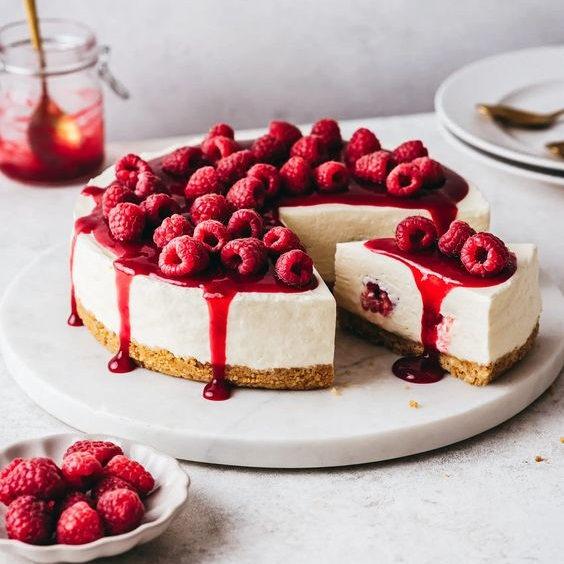

El Rincon De Las Recetas
Inicio
Recetas Dulces
Recetas Saladas
Recetas Dulces Paso a Paso

Para la base: procesar las galletas luego agregar la manteca previamente diluida en el microondas por 30 segundos. Mezclar hasta que las galletas queden húmedas. Este preparado ponerlo en la base de un molde redondo de 24 cm de diámetro (desmontable forrado con papel manteca) Reservar
En un bol batir la crema de leche con el azúcar luego agregar el queso crema y las frutillas previamente procesadas, (reservar un poco para decorar) mover en forma envolvente, por último agregar la gelatina sin sabor previamente hidratada en agua y luego disuelta en microondas por 15 ó 20 segundos.
Decorar con frutillas todo el contorno del molde luego agregar todo el contenido cremoso del segundo paso. Refrigerar por 30'.
Pasados los 30' sacar de la heladera y agregar la gelatina de frutillas previamente diluida en una taza de agua caliente.
Llevar a la heladera hasta el día siguiente. Es recomendable usar un molde desmontable para que sea más fácil desmoldar.
500gr de frutillas
300gr de queso crema
200gr de crema de leche
7g de gelatina sin sabor
30g de gelatina sabor frutilla
1 taza de agua caliente
150gr de azucar
150gr galletas de vainilla
100gr de manteca